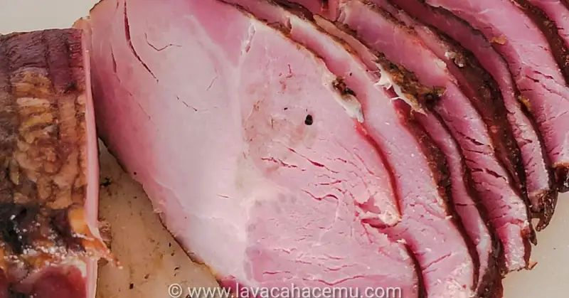
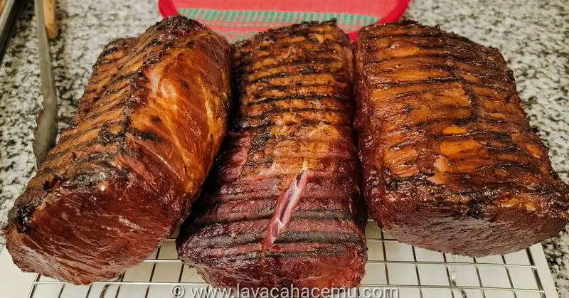
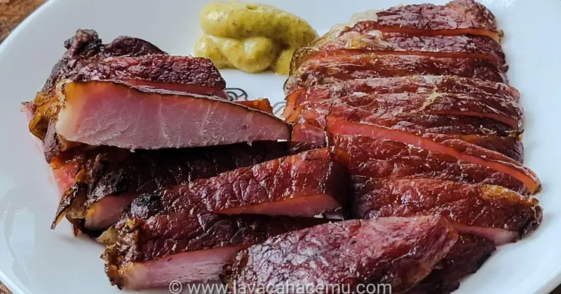

Lomo Ahumado

{kind=link}
No somos así de locos como de querer vivir "off grid" ni nada por el estilo, pero si con la intención de probar cosas nuevas, también conservamos las formas antiguas de hacer las cosas y si de pasada nos ahorramos un poco de dinero por no "depender de los cerdos capitalistas" ... jeje, aunque el puerco lo haya comprado en Sam's! Ajem... pues que mejor =)
Con esta receta agregamos otra habilidad para la época post-apocalíptica que parecería que en todos los noticieros nos quieren convencer de que es inminente: conservación de carnes. Aunque el titulo solamente dice ahumado, en realidad este lomo fue curtido por 5 días y luego ahumado; no muy diferente a lo que normalmente se hace con el lomo con hueso para obtener chuletas ahumadas o maaaaas o menos lo que se hace con el lomo para hacer el tocino canadiense.
Ingredientes
- 6 lbs/3kg de lomo de puerco
- de sal
- de sal rosa (Prague powder #1, mezcla de nitratos y nitritos)
- de azúcar
- de pimienta gorda
- de laurel
- de agua
Procedimiento
- Disuelve los polvos
- Agrega las especias
- En una o varias bolsas resellables, (en nuestro caso fueron 2) agrega la salmuera a trozos de puerco
- Guarda en el refrigerador 5 días, volteando una vez al dia
- Retira la carne de la salmuera y seca bien
- Ahúma unas 3 horas a ~300F o hasta que llegue a una temperatura interna de 160~165F
- Retira del ahumador y reposa
- Rebana al gusto (mientras sea perpendicular al grano)

{kind=link}
Este lomo sirve ya sea para el güebo de la mañana o para comer sólo con un poco de mostaza acompañado de unas bebidas efervescentes.
 {kind=link}